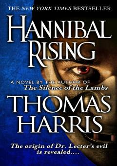

HRHannibal Lekterning qotilga aylanish tarixi — urush va qasos haqida roman.
Hannibal Rising — Tomas Harrisning mashhur Hannibal Lecter seriyasiga kiruvchi romani bo'lib, doktor Hannibal Lekterning yoshlik va shakllanish davrini tasvirlaydi. Ikkinchi Jahon urushi davrida sharqiy frontda yolg'iz qolgan bola qanday qilib dunyoning eng xavfli qotillaridan biriga aylanganini ko'rsatadi. Roman urush vahshiyligining inson ruhiyatiga ta'sirini chuqur o'rganadi.